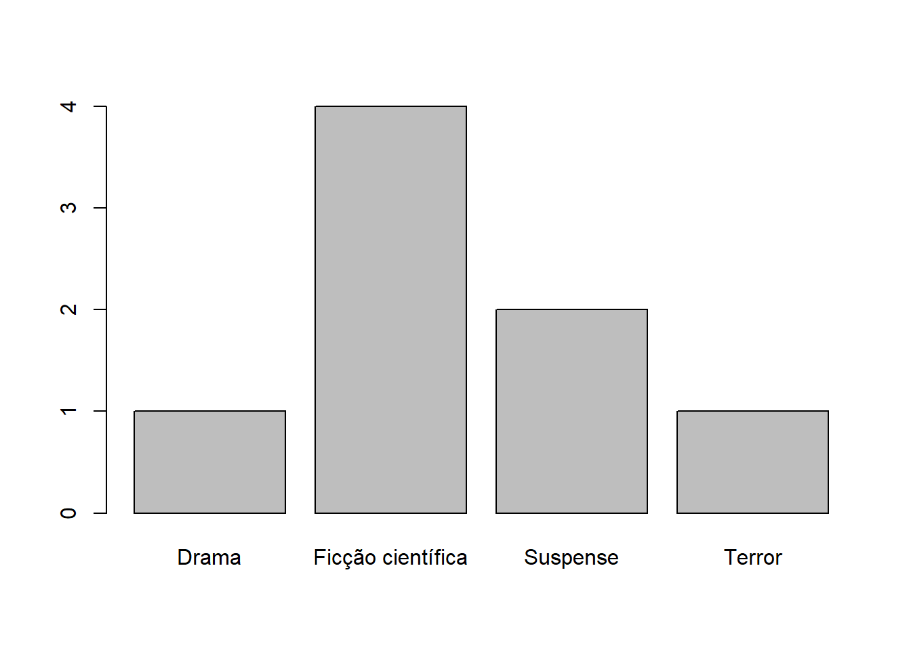
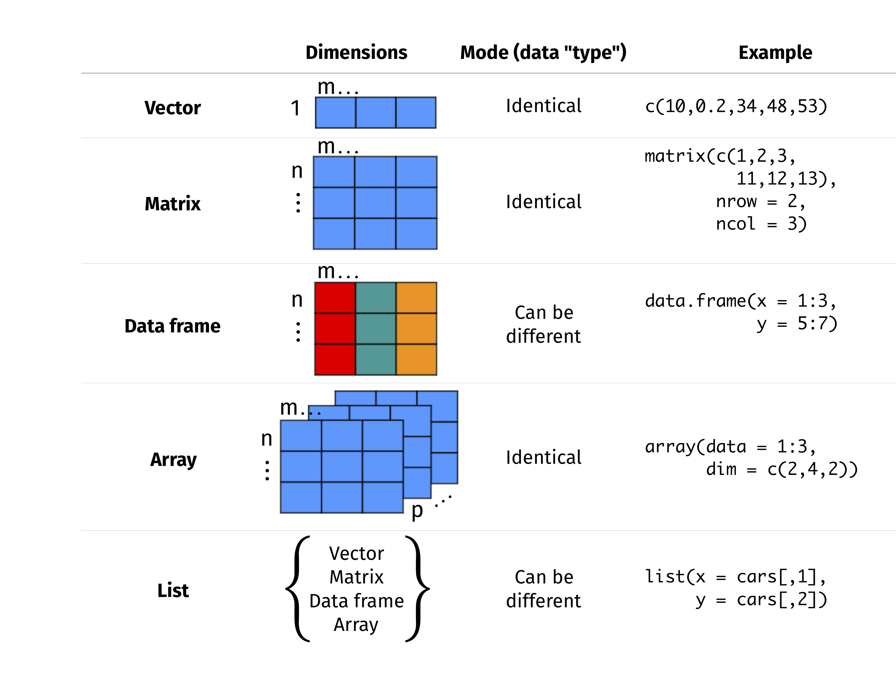

library(readxl)
dados_turma_1 <- read_excel("dados_turma_1.xlsx")
View(dados_turma_1)
# Agora experimente carregar os dados através do painel direito (Import Dataset...)
# Visualize os dados clicando no objeto na aba "Environment".Introdução às estruturas de dados e tipos de variáveis em R
Precisamos, inicialmente, definir o que é um objeto em R.
- objeto
-
Um objeto é qualquer coisa que pode ser associada (e armazenada) em uma variável.
As variáveis em R não são predefinidas; elas assumem o tipo (classe) do objeto que for atribuído a elas.
Assim, uma instrução do tipo:
x <- 1
atribui a x o valor (inteiro) 1, e é perfeitamente válido reatribuir:
x <- 2.5
A classe define a forma que o objeto será manipulado pelas diferentes funções.
Para essa aula, nós vamos utilizar o banco de dados gerado pela turma. Vamos carregá-lo:
Vamos fazer uma limpeza inicial nesse banco de dados para facilitar a leitura.
# Removendo a primeira linha (row)
dados_turma_1 <- dados_turma_1[-1,]
# Vamos remover também a primeira coluna, que é apenas o carimbo de data e hora.
dados_turma_1 <- dados_turma_1[,-1]Agora veja o código para visualizar algumas estatísticas da idade dos participantes:
summary(dados_turma_1$`Idade (em anos, somente número)`) Min. 1st Qu. Median Mean 3rd Qu. Max.
20.00 21.50 22.50 23.12 25.00 28.00 Visualize esses dados em um gráfico de barras:
barplot(table(dados_turma_1$`Idade (em anos, somente número)`))Ok, agora vamos começar a falar da estrutura desses dados no R.
Vamos rodar o código abaixo só para renomear as colunas para nomes menores e mais fáceis de acessar.
# Novos nomes para as colunas
novos_nomes <- c(
"idade",
"altura",
"cinema",
"musica",
"atividadefisica",
"otimismo",
"utilidade",
"tranquilidade",
"lidarproblemas",
"clarezamental",
"proximidade",
"decisoes",
"comunicativo",
"depressivo",
"reservado",
"controleestresse",
"energia",
"tensao",
"entusiasmo",
"preocupação",
"quietude",
"estabilidadeemocional",
"assertividade",
"temperamento",
"timidez",
"calma",
"sociabilidade",
"nervosismo"
)
# Renomear as colunas
colnames(dados_turma_1) <- novos_nomesI. Classes de objetos em R
A classe de um objeto é muito importante dentro do R. É a partir dela que as funções e operadores conseguem saber exatamente o que fazer com um objeto.
Por exemplo, se tentarmos somar “a” e “b”, uma mensagem de erro aparecerá. Isso acontece porque o R sabe que “a” e “b” são objetos do tipo texto.
1 + 1[1] 2"a" + "b"Error in "a" + "b": argumento não-numérico para operador binárioTemos, então, algumas classes principais de objetos: númerico, caractere, lógico, fator e data/hora.
A. Numérico
A classe de objeto numérico se divide em 2: inteiros e duplos.
1. Inteiros
Inteiros (integers) são números inteiros sem nenhuma vírgula.
Em R, você pode criar um número inteiro usando a função as.integer() ou simplesmente atribuindo um número inteiro a uma variável.
# Criando uma variável inteira
meu_inteiro <- as.integer(42)
# Vamos verificar qual é a classe usando a função class()
class(meu_inteiro)[1] "integer"# Veja que "meu_inteiro" é da classe "integer"Vamos ver se temos algum inteiro no nosso banco de dados. Para isso, vamos inspecionar com a função sapply(), aplicada a colnames() no banco de dados. Clique aqui para saber mais sobre a explicação da função1.
# Inspecionando:
colunas_com_inteiro <- colnames(dados_turma_1)[sapply(dados_turma_1, is.integer)]
# Veja que ela não encontra nenhum inteiro no momento.
# Usando a função class(), vemos que "idade" foi salvo como "numeric", que é menos específico.
class(dados_turma_1$idade)[1] "numeric"# Nós podemos alterar "idade" para a classe de número inteiro usando a função as.integer()
dados_turma_1$idade <- as.integer(dados_turma_1$idade)
# Veja que mudou:
class(dados_turma_1$idade)[1] "integer"# Agora a nossa função irá reconhecer que temos uma variável de número inteiro no banco de dados.
colunas_com_inteiro <- colnames(dados_turma_1)[sapply(dados_turma_1, is.integer)]2. Duplo (double/float)
Double (também conhecido como float) representa números com pontos decimais.
Por padrão, R trata números com pontos decimais como duplos.
Na maioria das situações, você não precisa se preocupar com a diferença entre “numeric”, “integer” e “double”, pois a classe “numeric” é ampla o suficiente para cobrir todos os tipos.
# Criando uma variável double
meu_double <- 3.14
colunas_com_duplo <- colnames(dados_turma_1)[sapply(dados_turma_1, is.double)]
colunas_com_numero <- colnames(dados_turma_1)[sapply(dados_turma_1, is.numeric)]
colunas_com_numero[1] "idade"Exercício: Você consegue descobrir qual é a classe de “altura” e como alterá-la para “numeric”?
Exercício 2: Agora que “altura” é uma variável corretamente identificada como numérica, você consegue gerar um boxplot usando a função boxplot()?
B. Caractere (character)
O tipo de dados Character armazena texto, também chamado de strings.
Os valores de texto são colocados entre aspas simples ou duplas.
# Criando uma variável de caractere
meu_caractere <- "Olá, Mundo!"
# Vamos ver se "cinema" é "character":
is.character(dados_turma_1$cinema)[1] TRUEC. Lógico (Booleano)
O tipo de dados lógicos representa valores binários, TRUE ou FALSE.
Os valores lógicos geralmente são o resultado de comparações ou operações lógicas.
# Criando uma variável lógica
está_chovendo <- TRUE
está_ensolarado <- FALSED. Fator
Fatores são usados para representar dados categóricos com níveis ou categorias distintas.
Os fatores são úteis na análise estatística e na visualização de dados.
# Criando uma variável de fator
escolaridade <- factor(c("Ensino Médio", "Faculdade", "Graduação", "Ensino Médio", "Graduação"))
# Vamos determinar que "cinema" é fator?
dados_turma_1$cinema <- as.factor(dados_turma_1$cinema)
# Verifique a classe de "cinema"
class(dados_turma_1$cinema)[1] "factor"# Inspecionando quais são os fatores em "cinema"
factor(dados_turma_1$cinema)[1] Ficção científica Ficção científica Suspense Suspense
[5] Drama Ficção científica Terror Ficção científica
Levels: Drama Ficção científica Suspense Terror# Vamos gerar um gráfico para ver a frequência dos fatores em "cinema"
plot(dados_turma_1$cinema)
# vamos fazer o mesmo com "música"
dados_turma_1$musica <- as.factor(dados_turma_1$musica)
plot(dados_turma_1$musica)# Usando a função table, conseguimos fazer uma tabulação cruzada das variáveis música e cinema.
table(dados_turma_1$cinema, dados_turma_1$musica)
Clássico Indie Pop Rock
Drama 0 0 0 1
Ficção científica 1 1 1 1
Suspense 0 0 1 1
Terror 0 0 0 1Dá para ver que na turma temos amantes da ficção científica e do rock.
Quem sabe até o final da primeira parte da disciplina, descobrimos se os roqueiros pontuam mais alto em algum traço de personalidade (extroversão vs introversão, neuroticismo vs estabilidade) em relação aos não roqueiros. Ou se os amantes da ficção científica têm algum traço mais exacerbado de personalidade.
E. Data e Hora
O R também tem classes específicas para lidar com dados de data e hora (mas não vamos entrar em detalhes nesse momento).
As classes mais comuns são Date, POSIXct e POSIXlt.
# Criando uma variável de data
hoje <- as.Date("2023-07-22")
# Criando uma variável POSIXct (data e hora com fuso horário)
current_datetime <- as.POSIXct("2023-07-22 14:30:00", tz = "UTC")II. Estruturas de dados básicas em R
A. Vetores
Criando vetores
Os vetores representam uma coleção de elementos do mesmo tipo de dados.
Você pode criar um vetor usando a função c(), que significa “combinar” ou “concatenar”.
# Criando um vetor numérico
vetor_numerico <- c(10, 20, 30, 40, 50)
# Criando um vetor de caractere
vetor_caractere <- c("maçã", "banana", "laranja")
# Criando um vetor lógico
vetor_logico <- c(TRUE, FALSE, TRUE)Operações básicas (subconjunto, aritmética, lógica)
Acessar elementos específicos de um vetor usando colchetes:
meu_vetor <- c(5, 10, 15, 20, 25)
elemento_3 <- meu_vetor[3] # Acesse o terceiro elemento (15)
# Veja que se eu salvar "idade" do banco de dados em um objeto, ele se torna um vetor numérico também
idade <- dados_turma_1$idadeAritmética: Realizar operações matemáticas em vetores (por exemplo, adição, subtração, multiplicação).
vetor1 <- c(1, 2, 3)
vetor2 <- c(4, 5, 6)
soma_vetor <- vetor1 + vetor2 # Adição elementar
idade+1[1] 23 23 21 26 26 24 21 29idade/2[1] 11.0 11.0 10.0 12.5 12.5 11.5 10.0 14.0idade*2[1] 44 44 40 50 50 46 40 56idade-7[1] 15 15 13 18 18 16 13 21altura <- dados_turma_1$altura
altura <- as.numeric(altura)
idade*altura[1] 35.64 37.62 35.80 44.00 44.50 40.71 36.00 48.72idade+altura[1] 23.62 23.71 21.79 26.76 26.78 24.77 21.80 29.74Operações lógicas em vetores (por exemplo, AND, OR).
vetor_logico <- c(TRUE, FALSE, TRUE)
all_true <- all(vetor_logico) # Verifica se todos os elementos são TRUEFunções vetoriais (comprimento, soma, média, etc.)
R fornece várias funções para trabalhar com vetores, como calcular o comprimento, soma, média, etc.
# Comprimento do vetor
length(idade)[1] 8# Soma
sum(idade)[1] 185# Média
mean(idade)[1] 23.125# Desvio padrão
sd(idade)[1] 2.748376# Variância
var(idade)[1] 7.553571# Correlação entre dois vetores
cor(idade, altura)[1] -0.05882585B. Matrizes
Matrizes são estruturas de dados bidimensionais com linhas e colunas do mesmo tipo de dados.
Você pode criar uma matriz usando a função matrix().
# Criando uma matriz
minha_matriz <- matrix(c(1, 2, 3, 4, 5, 6), nrow = 2, ncol = 3, byrow = TRUE)
minha_matriz [,1] [,2] [,3]
[1,] 1 2 3
[2,] 4 5 6# Se ,byrow=FALSE, a matriz será preenchida na ordem das colunas
minha_matriz <- matrix(c(1, 2, 3, 4, 5, 6), nrow = 2, ncol = 3, byrow = FALSE)
# Vamos fazer uma matriz de correlação entreOperações básicas (subconjunto, aritmética, multiplicação de matrizes)
Subconjunto: Acessando elementos específicos, linhas ou colunas de uma matriz usando indexação.
Aritmética: Realização de operações aritméticas elementares em matrizes.
Multiplicação de matrizes: Realizando a multiplicação de matrizes usando o operador %*%.
Código de exemplo:
# Subconfiguração
my_matrix <- matrix(c(1, 2, 3, 4, 5, 6), nrow = 2, ncol = 3, byrow = TRUE)
element_2_3 <- my_matrix[2, 3] # Acesse o elemento na segunda linha e terceira coluna (6)
# Aritmética
matriz1 <- matrix(c(1, 2, 3, 4), nrow = 2)
matriz2 <- matrix(c(5, 6, 7, 8), nrow = 2)
soma_matriz <- matriz1 + matriz2 # Adição elementar
# Multiplicação da matriz
produto_matriz <- matriz1 %*% matriz2Funções de matriz (dim, rowSums, colSums, etc.)
R fornece várias funções para trabalhar com matrizes, como obter dimensões, somas de linhas, somas de colunas, etc.
minha_matriz <- matrix(c(1, 2, 3, 4, 5, 6), nrow = 2, ncol = 3, byrow = TRUE)
# Dimensões da matriz
matrix_dimensions <- dim(minha_matriz) # Saída: 2 linhas e 3 colunas
# Somas de linhas e somas de colunas
row_sums <- rowSums(minha_matriz)
col_sums <- colSums(minha_matriz)
# Vamos gerar uma matriz de correlação dos itens da escala de bem-estar:
# Não se preocupe em entender bem o código abaixo, isso será visto em outra aula.
library(dplyr)
Attaching package: 'dplyr'The following objects are masked from 'package:stats':
filter, lagThe following objects are masked from 'package:base':
intersect, setdiff, setequal, union# Mapeamento dos valores categóricos para numéricos
replacement_mapping <- c("Nunca" = 0,
"Raramente" = 1,
"Algumas vezes" = 2,
"Frequentemente" = 3,
"Sempre" = 4)
# Lista das colunas a serem alteradas
columns_to_replace <- c("otimismo",
"utilidade",
"tranquilidade",
"lidarproblemas",
"clarezamental",
"proximidade",
"decisoes")
# Substituição dos valores categóricos por numéricos
dados_turma_1 <- dados_turma_1 %>%
mutate_at(vars(all_of(columns_to_replace)),
~replace(., . %in% names(replacement_mapping), replacement_mapping[.]))
# Colocar como numérico
dados_turma_1 <- dados_turma_1 %>% mutate_at(c("otimismo", "utilidade", "tranquilidade", "lidarproblemas", "clarezamental", "proximidade", "decisoes"), as.numeric)
# Gerar a matriz de correlação
correlation_matrix <- cor(dados_turma_1 %>%
select(otimismo:decisoes), use = "complete.obs")
# Visualizar a matriz de correlação
library(corrplot)corrplot 0.92 loadedcorrplot(correlation_matrix, method = 'color', order = 'alphabet')C. Sequências (arrays)
Arrays são estruturas de dados multidimensionais que podem armazenar elementos do mesmo tipo de dados.
Você pode criar um array usando a função array().

# Criando um array
my_array <- array(c(1, 2, 3, 4, 5, 6), dim = c(2, 3, 2))
# Aqui está a explicação passo a passo:
# c(1, 2, 3, 4, 5, 6): Isso cria um vetor com os valores 1, 2, 3, 4, 5 e 6.
# dim = c(2, 3, 2): Isso define as dimensões do array tridimensional. O primeiro valor (2) representa o número de elementos no primeiro "nível" do array (como páginas em um livro), o segundo valor (3) representa o número de elementos no segundo "nível" (como linhas em uma página) e o terceiro valor (2) representa o número de elementos no terceiro "nível" (como colunas em uma página).
# Portanto, o array está sendo organizado em duas "páginas", cada página contendo uma matriz 2x3.D. Listas
As listas são estruturas de dados versáteis que podem conter elementos de diferentes tipos de dados.
Você pode criar uma lista usando a função list().
# Criando uma lista
minha_lista <- list(1, "olá", TRUE, c(2, 4, 6))Você pode acessar elementos em uma lista usando indexação ou nomes (se nomeados).
minha_lista[[1]] # Acesse o primeiro elemento[1] 1minha_lista[[2]] # Acesse o segundo elemento[1] "olá"minha_lista[[4]][1] # Acessando o primeiro elemento do vetor (quarto elemento)[1] 2E. Dataframes
Os dataframes são estruturas de dados bidimensionais que armazenam dados em linhas e colunas.
Cada coluna em um quadro de dados pode ter um tipo de dados diferente.
Você pode criar um quadro de dados usando a função data.frame().
# Criando um dataframe
dados_aluno <- data.frame(
nome = c("Alice", "Bob", "Charlie", "David"),
idade = c(22, 21, 23, 20),
pontuação = c(85, 78, 92, 80),
aprovado = c(TRUE, FALSE, TRUE, TRUE)
)
# "dados_turma_1" é um dataframe!Manipulando dataframes (adicionando, removendo, renomeando colunas)
Adicionar colunas: você pode adicionar novas colunas a um dataframe s usando o operador de atribuição ($ ou []).
dados_turma_1$genero <- c("Feminino")Removendo colunas: Use a função subset() para excluir colunas indesejadas.
dados_turma_1 <- subset(dados_turma_1, select = -genero)Renomeando colunas: Use a função colnames() para alterar os nomes das colunas.
# Novos nomes para as colunas
novos_nomes <- c(
"idade",
"altura",
"cinema",
"musica",
"atividadefisica",
"otimismo",
"utilidade",
"tranquilidade",
"lidarproblemas",
"clarezamental",
"proximidade",
"decisoes",
"comunicativo",
"depressivo",
"reservado",
"controleestresse",
"energia",
"tensao",
"entusiasmo",
"preocupação",
"quietude",
"estabilidadeemocional",
"assertividade",
"temperamento",
"timidez",
"calma",
"sociabilidade",
"nervosismo"
)
# Renomear as colunas
colnames(dados_turma_1) <- novos_nomesOperações básicas (subconjunto, filtragem, classificação)
Subconjunto de linhas e colunas: você pode acessar linhas ou colunas específicas em um quadro de dados.
# Para acessar elementos específicos, coloque entre colchetes. O primeiro elemento é a linha e o segundo é a coluna
# Aqui, vamos verificar a quinta linha da terceira coluna:
dados_turma_1[5,3]# A tibble: 1 × 1
cinema
<fct>
1 Drama # Acesse as três primeiras linhas e as colunas "nome" e "pontuação"
subconjunto_dados_turma_1 <- dados_turma_1[1:3, c("idade", "altura")]Filtragem: Use condições lógicas para filtrar linhas com base em determinados critérios.
# Filtre os alunos que gostam de rock
estudantes_rock <- dados_turma_1[dados_turma_1$musica == "Rock", ]Classificação: Use a função order() para classificar o dataframe com base em uma coluna específica.
# Classifica o dataframe pela coluna "idade" em ordem decrescente
dados_ordenados <- dados_turma_1[order(-dados_turma_1$idade), ]III. Coerção do tipo de objeto
A coerção permite que você converta explicitamente um tipo de dados em outro usando funções de conversão específicas.
São elas:
as.numeric()
as.character()
as.logical()
etc.
# Exemplo
vetor_caractere <- c("5", "6", "7", "8")
# Converter para numeric explicitamente
vetor_caractere <- as.numeric(vetor_caractere)Tenha cuidado com a conversão de tipo, pois pode resultar em resultados inesperados se os dados não puderem ser convertidos com precisão (ex. converter caracteres não numéricos em numéricos).
IV. Fatores em detalhe
A. Compreendendo dados categóricos
Os dados categóricos representam categorias ou grupos discretos e distintos.
Os dados categóricos podem ser nominais (não ordenados) ou ordinais (ordenados).
# Dados categóricos nominais
cor_do_olho <- c("Azul", "Marrom", "Verde", "Verde", "Marrom", "Azul")
# Dados categóricos ordinais
nivel_educacao <- c("Ensino Médio", "Faculdade", "Graduação", "Ensino Médio", "Graduação")
# Exemplo com os nossos dados
genero_filme <- dados_turma_1$cinema
atividade_fisica <- dados_turma_1$atividadefisicaB. Criando e trabalhando com fatores
Fatores são usados para representar dados categóricos em R.
Você pode criar um fator usando a função factor().
# Criando um fator a partir de dados categóricos nominais
cor_do_olho_fator <- factor(cor_do_olho)
# Criando um fator a partir de dados categóricos ordinais
nivel_educacao_fator <- factor(nivel_educacao, levels = c("Ensino Médio", "Faculdade", "Graduação"), ordered = TRUE)
genero_filme <- factor(genero_filme)
atividade_fisica <- factor(atividade_fisica, levels = c("Não pratico atividade física", "Menos do que três vezes na semana", "Entre três e cinco vezes na semana", "Mais do que cinco vezes na semana"), ordered = TRUE)Trabalhando com fatores:
levels(): Obtenha os níveis/categorias únicos de um fator.
nlevels(): Obtenha o número de níveis/categorias em um fator.
table(): Cria uma tabela de frequência de níveis de fator.
levels(atividade_fisica)[1] "Não pratico atividade física" "Menos do que três vezes na semana"
[3] "Entre três e cinco vezes na semana" "Mais do que cinco vezes na semana" nlevels(atividade_fisica) [1] 4table(atividade_fisica)atividade_fisica
Não pratico atividade física Menos do que três vezes na semana
1 3
Entre três e cinco vezes na semana Mais do que cinco vezes na semana
2 2 # Apenas exemplificando como gerar um gráfico de barras:
# gerando um dataframe com atividade física
tabela_freq_atividade <- data.frame(table(atividade_fisica))
library(ggplot2)
ggplot(tabela_freq_atividade, aes(x=atividade_fisica, y=Freq)) +
geom_bar(stat = "identity") +
coord_flip()V. Práticas recomendadas para trabalhar com estruturas de dados
A. Convenções de nomenclatura
Adote uma nomenclatura consistente para os seus dados.
Priorize nomear com letras minúsculas, sem espaços ou caracteres especiais
Por exemplo, ao invés de usar:
Tempo de atividade física por semana
Use:
tempo_ativ
Use nomes descritivos que transmitam a finalidade e o conteúdo da estrutura de dados.
Evite usar nomes que entrem em conflito com funções internas em R (p.ex. “mean”, “data”, “function”).
B. Dados organizados (tidy data)
O que são dados organizados?
Tidy data é uma forma estruturada e padronizada de organizar dados, popularizada por Hadley Wickham. Segue um conjunto de princípios que simplificam a manipulação e análise de dados, são eles:
Princípios
Colunas são variáveis
Linhas são observações
Os valores estão nas células
O nosso banco de dados está organizado conforme esses princípios! Veja:
| participante | altura | cinema | musica | (…) |
|---|---|---|---|---|
| 1 | 1.77 | suspense | pop | (…) |
| 2 | 1.67 | fic_cientifica | classico | (…) |
| 3 | 1.89 | drama | rock | (…) |
| (…) | (…) | (…) | (…) | (…) |
VI. Conclusão
Hoje abordamos os conceitos fundamentais de estruturas de dados e tipos de variáveis em R. Abordamos as melhores práticas para trabalhar com estruturas de dados, incluindo convenções de nomenclatura e tidy data.
VII. Exercícios e Exemplos
Exercício 1
Crie um vetor numérico contendo temperaturas em Celsius: 25, 30, 22, 28, 21.
Converta as temperaturas Celsius para Fahrenheit usando a fórmula: Fahrenheit = (Celsius * 9/5) + 32.
Armazene o resultado em um novo vetor e imprima-o.
# Exercício 1
celsius_temperatures <- c(25, 30, 22, 28, 21)
fahrenheit_temperatures <- (celsius_temperatures * 9/5) + 32
print(fahrenheit_temperatures)[1] 77.0 86.0 71.6 82.4 69.8Exercício 2
Crie um vetor de caracteres representando os dias da semana: “Segunda”, “Terça”, …, “Domingo”.
Converta o vetor de caracteres em um fator com níveis ordenados representando a ordem dos dias em uma semana.
Imprima o fator com os níveis na ordem correta.
# Exercício 2
dias_da_semana <- c("segunda", "terça", "quarta", "quinta", "sexta", "sábado", "domingo")
ordenado_dias <- factor(dias_da_semana, levels = c("segunda", "terça", "quarta", "quinta", "sexta", "sábado", "domingo"), ordered = TRUE)
print(ordenado_dias)[1] segunda terça quarta quinta sexta sábado domingo
Levels: segunda < terça < quarta < quinta < sexta < sábado < domingoFootnotes
Vamos explicar essa função em detalhes:
sapply(dados_turma_1, is.integer): Aqui estamos usando a funçãosapply, que é usada para aplicar uma função a cada elemento de uma lista ou vetor. No caso, a lista édados_turma_1(seu conjunto de dados). A função que estamos aplicando éis.integer, que retornaTRUEse um elemento for do tipo inteiro (integer) eFALSEcaso contrário. Portanto, o resultado dessa parte é um vetor lógico (booleano) indicando para cada coluna se ela contém valores inteiros.colnames(dados_turma_1)[...]: Aqui estamos usandocolnames(dados_turma_1)para obter os nomes das colunas do conjunto de dados. No entanto, queremos filtrar apenas as colunas que contêm valores inteiros. Portanto, usamos o resultado anterior (vetor lógico) como índice para extrair apenas os nomes das colunas onde o resultado éTRUE.
Em resumo, o código
[sapply(dados_turma_1, is.integer)]verifica cada coluna do conjunto de dados para determinar se ela contém valores inteiros. O resultado é um vetor lógico indicando quais colunas têm valores inteiros. E então, usando esse vetor lógico como índice, estamos extraindo os nomes das colunas que têm valores inteiros e atribuindo-os à variávelcolunas_com_inteiro.↩︎